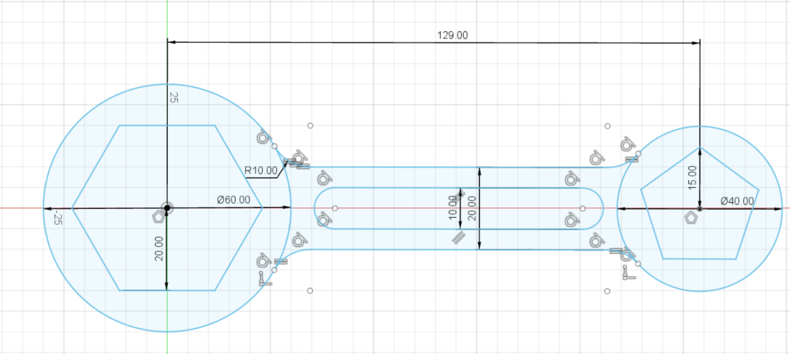
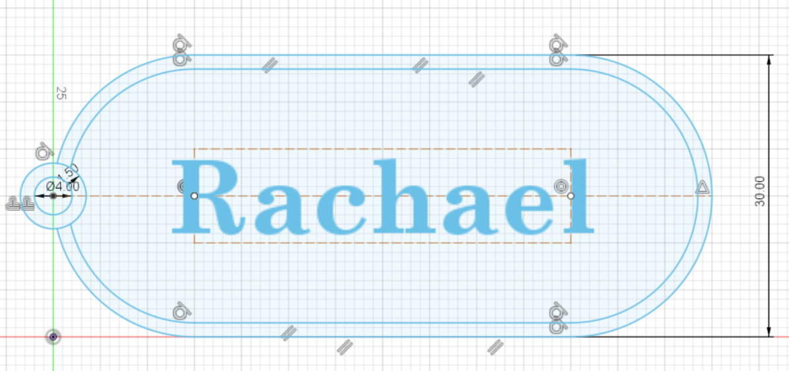
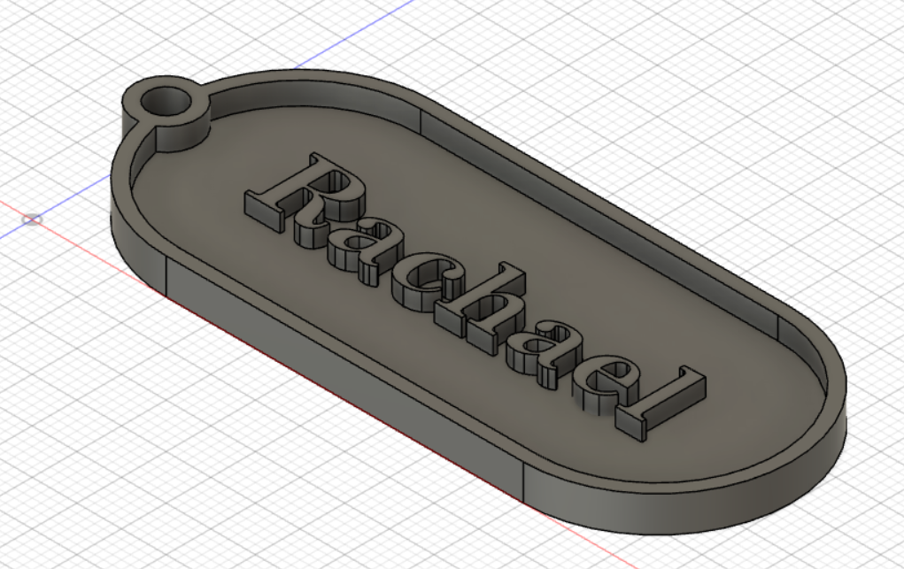
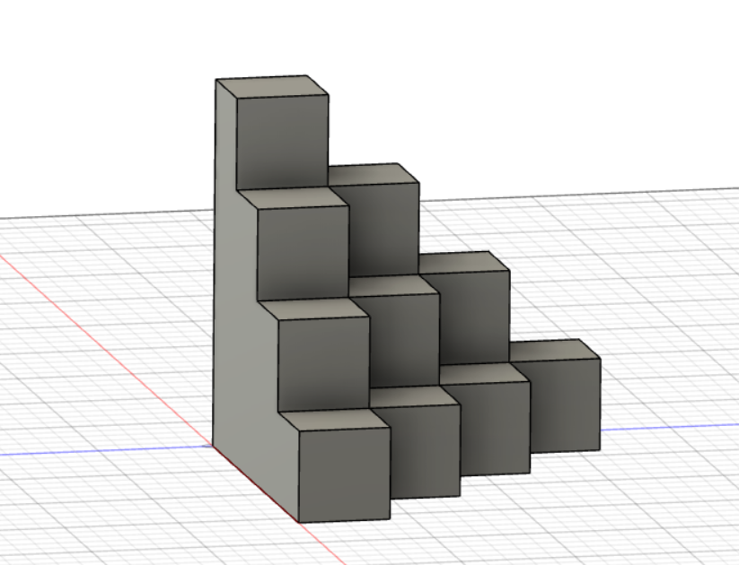
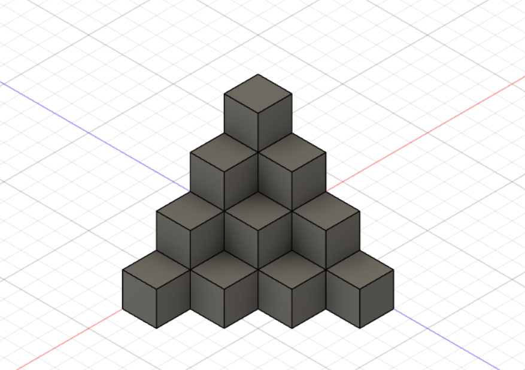
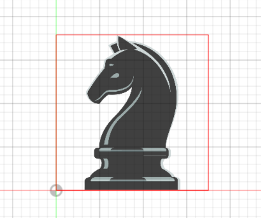
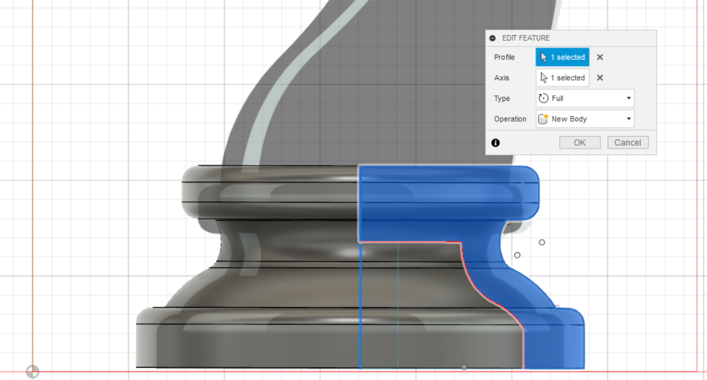
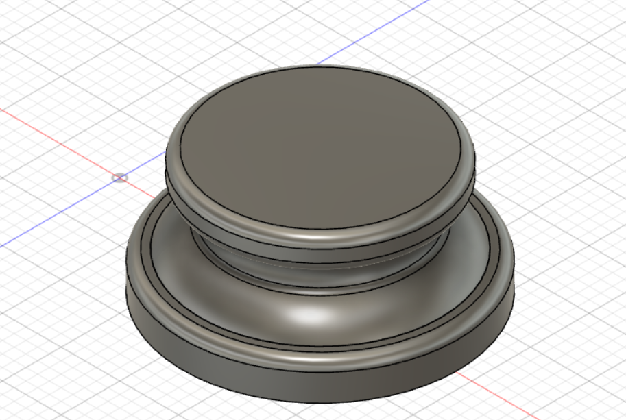
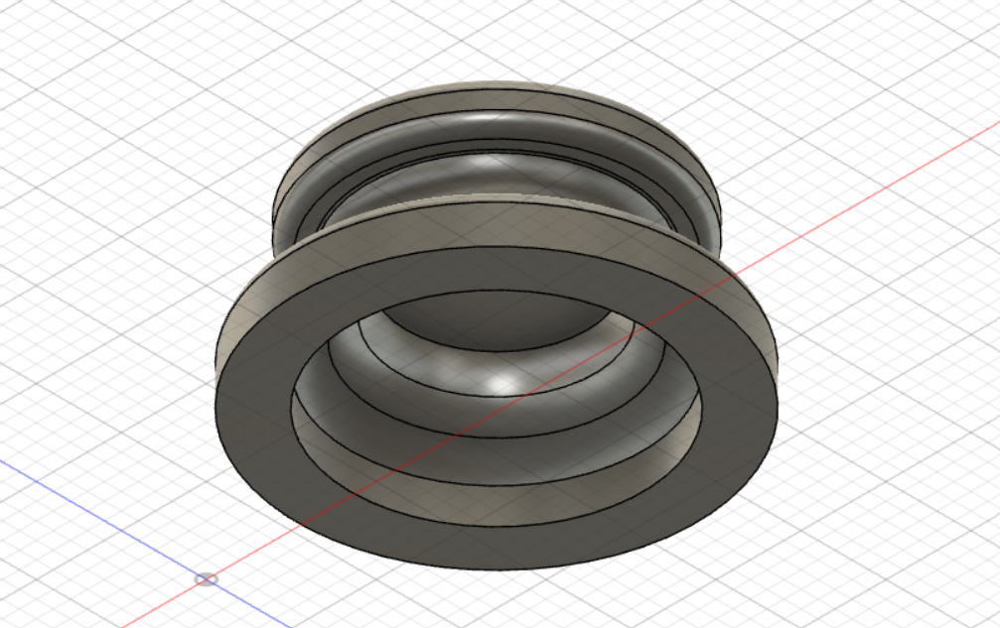
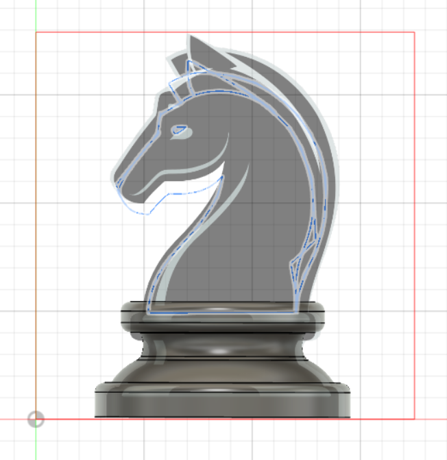

Computer Aided Design (CAD)
Raster Graphics - GIMP
This is my first time using GIMP and my past projects and modules hardly require the use of the software. it took me some time to figure out and follow the steps as we were going through the practice in class, but I started to get the hang of it after asking for help from my friends and trying out a couple more times.
Firstly, we open up an image. Next, we had to use the 'free select' tool to outline and select the areas that we wanted to include for our final image. Afterwards, we insert another image of any desired background into a 2nd layer. Once I was done, I make the necessary adjustments for the two layers to fit together.

Vector Graphics - Inkscape
Just like Gimp, I have never used Inkscapebefore today so it was quite fun as I drew out my logo as well.
Firstly, I set my image and reduced the opacity. Next, I created a new layer and started to trace out each the first component with the beizer function. After I am satisfied with the shape, I choose the my desired colour for the area I traced. With every companent, I create a new layer, and I found out that O ws able to rearrange the layer sequence as well! This is my end final image.

Exercise 1
- Create Sketch
- Select a plane. (I have chosen to draw across the top plane)
- Use the circle and rectangle function to draw out the shapes.
- After finishing sketch, Extrude:
- Select the areas required for extrusion.
- Set the distance for the drawing to be extruded.
Exercise 2
- 'Create Sketch'
- Select a plane.(I have chosen to draw across the top plane)
- Use the circle function to draw out the specified size. (I used the 'Center Diameter Circle Function' and selected the '0' axis to be the centre of the first circle)
- This mean my drawing will be done along the horizontal axis.
- Use the polygon function to draw out the specific size and shape.
- Take note to use the 'Circumscribed Polygon' function. (the size of the pollygon is determined by the length from the centre point to the mid-point of one edge)
- Check and make sure it's the correct number of sides.
- Repeat for the other set of circle and polygon.
- Make sure to set accordingly to the new set of values.
- For the polygon, this time we have to use the 'Inscribed Polygon' function. (the size of the pollygon is determined by the length from the centre point to the vertex)
- Remember to ensure the number of sides is '5'
- After drawing the 2 sets of circles and polygons, I use the 'Sketch Dimension' function to set the distance between the 2 center points to '129'.
- Then, I draw a line to connect the 2 sets and 'Offet' it by '10' and '-10' so that the handle of the drawing is centered.
- If needed, use 'Trim' to remove any excess drawings.
- I used 'FIlet' at the intersection of the circles and lines.
- Finally, use 'Slot' function to draw the pill shape.

- After finishing sketch, "Extrude':
- Select the areas required for extrusion.
- Set the distance for the drawing to be extruded.
3D Models
Exercise 1: Name Tag
-
First, I created a new sketch on the top plane. I used 'Slot' to create the shape and 'Center Diameter Circle' for the ring. When I am done with the shape I added a 'Text' to allow personalisation.
 -
Once I have completed with my sketch. I used the 'Extrude' function to extrude the relelvant components to their specific heights.

Exercise 2: Lego Brick
| As for the next exercise, we were required to create a lego brick with hollows underneath to allow the lego to be able to stack on top of one another like how a regular lego would be designed to function. I referred to Kevin Kennedy’s video tutorial on the drawing of a Lego brick for guidance as I drew the lego brick on fusion 360. |

|
|---|---|
Exercise 3: Extrudes & Planes
This exercise consists of stacked cube boxes, 20x20x20, to form a pyramid and shelled to thickness of 4mm.
- Firstly, I create a new sketch on the top plane and drew out the first layer of boxes, making sure every square was 20x20.
- Secondly, I extruded the drawing by '20' since the height was '20'.
- I repeated this two steps for the next three layers.  
- Once I am done with the shape of my stacked boxes, I am left to create a hollow of thickness '4'. To do this, I used the 'Shell' function and select the bottom surface.
.png)
3D Models - 2
Exercise 1: Mug with Handle
In this exercise, I'll be designing a mug with an arc at the base.
- Create a sketch of how the shape of the mug (without the handle) will look like.
- As we will be using 'Revolve' in our next step, we will only have to draw a profile.
- Avoid overlapping the vertical axis.
- 'Revolve' the profile drawing, select the vertical axis as the point of axis.
- By selecting, the vertical axis as your point of axis, you're ensuring there is no holes in the centre as you 'Revolve' the profile.
.png)
- Next, select the front plane when creating a new sketch. Then, I used the outline of the cup as reference while drawing my handle.
- This is to ensure the handle will be inline with the cup once it extruded.
- Finally, 'Extrude' the handle and join it to the rest of the mug.
.png)
Exercise 2: Hex Nut
Just Like the lego brick exercise, I refer back to Kevin Kennedy’s video tutorial.
- Firstly, create a sketch of the polygon (hexagon) and extrude the drawing.
- Try to draw from the point of origin so that the next few steps will be made simpler.
- Next, create another sketch on the 'XY' axis. Draw an inverted right angle triangle at the top-right corner of the body.
- Draw a horizontal and vertical line from the edge of the body.
- Connect the two ends with adiagonal line.
- Afterwards, select the triangle sketch and use the 'Revolve' function on it.
- Be sure to set it to 'cut'.
- Now that the top of the body is done, I had to do the same for the bottom part. In order to do so, I used the 'Mirror' function.
- I had to create a midplane to act as my point of axis in order for my design to be mirrored from the right distance. So, I went to 'Construct', then 'Midplane'.
- Then, I selected the top and bottom surface of the body for the midplane to be horizontal at the centre of the hex screw.
- After I have my midplane, I selected the 'Revolve' feature area as my object as well as midplane as my axis.
.png)
.png)
- Finally, I selected the 'Hole' function and made the adjustments to whatever designs I prefer to create the threaded hole.
.png)
|
|---|
Assignments
3D Printing - Knight Chess Piece
We were assigned to 3D print a chess piece of our choice. I wanted to give the knight piece a try since it has the most interesting shape out of the other pieces.
-
First, I went to find and download a template/image of a knight chess piece.
-
After adding a new canvas to my file and making sure that it is of a correct scale and is on the right plane and position, I created a new sketch on the plane where I inserted my canvas on.
 -
Next, I drew out a profile of the chess base with the hollow part excluded and click 'FINISH SKETCH'.
 -
With the drawn profile of the chess base, I used the 'Revolve' function to create a full revolution of the hollowed base.
  - Afterwards, I created another sketch on the same plane.
-
By using 'Control Point Spline', I traaced out the rest of the knight piece over the canvas. By using this function, I am allowed to make adjustments in the outline if there is any parts I'm dissatisfied with. And when I am happy with the shape, I used the ''Sketch Scale' to change the size without it affecting the drawing shape.
 - Once I have complete tracing the rest of the chess piece, I used 'Extrude' and make sure it was 'symmetry' to extrude of the requireed thichness of the chess piece.
- Upon finishing my 3D sketch, I have to prepare the file for printing. I saved the file and exported it as an stl file to get it ready for printing.
.png)
To resolve this issue, I tried printing it again, this time with supports. Here is the final piece!
.png)
.png)
3D Modeling
For this assignment in creating a design that demonstrates the benefits of 3D printing, I have drawn out a 3-dimensional cylindrical maze! This was a fun assignment that allowed me to experiment the functions in Fusion 360. For this design, the most challenging part would be to create the actual maze. What makes it different from regular mazes is the curved surface of the maze created around the cylinder. Hence, it will be most suitable to 3D print the cylindrical maze, unlike regular mazes with flat surfaces.

To create this design, firstly I created a cylinder. Then, I created a cross-section area of the cylinder (aligned with the cylinder and starting from the centre) and downloaded an SVG format file of a maze design from a maze generator I found online. After I have positioned the SVG file over the cross-section such that it is of the largest possible scale within the cross-section and the width is aligned with one another, I made used of the 'Emboss' function to wrap the design around the cylinder. Afterwards, I just added a few final details to complete my cylindrical maze.
Lasercut Parametric Box
For this assignment, we are required to design a music box. My music box is a simple design of a record player on the top lid and musical notes at the front. In addition, it is designed to have a whole on the right side to allow access to the mechanism crank and a moveable lid.
-
Firstly, I set up some parameters. This way, if the dimensions are incorrect or the size of the final product is not right, I'll be able to change the dimensions quickly without having to reset/redraw everything from the start.

-
Now that I have all the parameters set, I went ahead and start creating my sketch. I selected the top plane to start off with my music box base.
- After completing the sketch and extruding it to the set thickness. I created a new component and selected my front plane to complete the front part of the box.
- Then, I extruded out the thickness and use the 'Move/Copy' function to make a copy for the back part.
- I repeated step 3 and 4 for the left and right sides on the left plane.
- For the top lid, I drew over the topof the box so that my lid design will be inline with the rest of the box.
- Once I was done drawing out my music box. I needed to produce the sketches. To do this, I clicked on each surface and press 'P' to 'Project' each sketch and save as a DXF file.
-
After I am done, I create a new design and open the DXF files onto a plane. This is when I made any final adjustments to my sketch as well as add in my desired designs. Once completed, I saved the file and exported it as an DXF to get it ready for printing.
- During my printing process, I faced a difficulty. When I inserted my thumbdrive and open my file, I found that a part of my design was missing. And after a while of trying to search for it through other prev files, I wasn't able to locate that part of my design anywhere. Luckily, I still had a saved image of the design in my folder and I was able to upload to get the design engraved onto my music box.
-
Here are my cut-outs. At first the engraving for my front and top side was a bit light, so I increased the power and reduced the speed for the engraving components to get a darker and clear design. (I had to cut on a new piece of plywood as the first ones had fallen out and is no longer in line, which is why the design looks blury)
.png)
- After cutting, it's time for me to layout and assemble the music box! (I used hot glue gun to attach the pieces)
.png)
Here is my final cut out after removing the pieces with cutting errors.
|
.png)
This will be the layout of my music box design.
|
.png)
Before gluing the components together, I tried positioning them together to check if everything is fitted well.
|
.png)
Step 1: Glue the mechanism to the base, slowly move the right piece through the hole and glue the right piece to the base.
|
.png)
Step 2: Glue the back piece to the glued components.
|
.png)
Step 3: Glue the front piece to the glued components.
|
.png)
Step 4: To avoid squeezing the lid after gluing in both sides of the box, I positioned the lid into the hole beforehand.
|
.png)
Here is the completed music box (close lid)!
|
.png)
Here is the completed music box (open lid)!
|